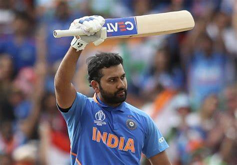
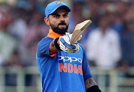

Rohit shrama
virat kholi
suyrkhumar yadav
Kl rahul
hardik pyndya
>
information about rohit sharma
Rohit shrama
go to link
 feourate colour:
Rohit Gurunath Sharma (born 30 April 1987) is an Indian international cricketer and the current captain of the Indian cricket team. Considered as one of the best opening batters of all time, Rohit Sharma is known for his timing, eligance, Six-hiting abilities and Leadership. He plays as a right-handed batsman for Mumbai
Batting: Right-handed
Bowling: Right-arm off break
Last ODI: 17 July 2022 v England
Last Test: 12 March 2022 v Sri Lanka
information about virat kholi
virat kholi

go to link
Virat Kohli (Hindi pronunciation: ... On 2 August, Kohli scored his first Test century on English soil in the first test match of the series against England. On 5 August, Kohli displaced Steve Smith to become the No. 1 ranked Test batsman in the ICC Test rankings. He also became the seventh Indian batsman and first